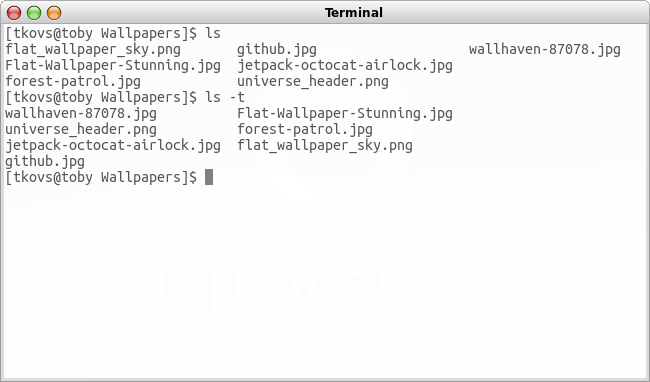

Comandos básicos do Terminal (Linux) (em progesso)
Tabela de conteúdo
Introdução
A ideia desse post surgiu quando eu vi a dificuldade que minha turma no 4º ano de informática no IFAL tem com o terminal. Há ainda uma visão ruim sobre ele, que é difícil e que interface gráfica é mais “fácil”, mas é apenas costume, eu trabalho mais rápido no terminal que usando o mouse.
Terminal

Em primeiro lugar, observe o terminal. Na configuração do meu, o texto que aparece antes de qualquer
comando que eu insira é [tkovs@toby Downloads]$. O que isso significa? Antes do @,
aparece o nome do usuário atual: tkovs. Imediatamente após o @, o nome da máquina: toby. Por
último, após o nome da máquina, informa-se a pasta atual que o terminal está acessando, que nesse
exemplo é a pasta Downloads. Eu poderia trocar essa informação, mudar a forma que ela
aparece, exibir a hora, mostrar o caminho completo da pasta, data atual, etc.
Comando
Dentro do Terminal, você tem a oportunidade de executar os comandos que achar necessário. Basta
digitar o nome do comando e seus argumentos. Por exemplo, para listar os arquivos do diretório
atual, basta um $ls para que uma lista seja retornada. Se você quiser listar os arquivos, e
antes de cada um exibir seu tamanho, basta usar a opção s. O comando fica assim: $ls -s,
ou na forma mais longa: ls --size. Normalmente, opções têm a forma curta e a longa. Para usar
a curta usa-se 1 traço, e na longa, 2.
No exemplo abaixo mostro o comando ls de duas formas: na primeira usando sua forma sem argumentos, e na segunda listando os arquivos em ordem de modificação onde os mais recentes aparecem primeiro.

Dicas
Algumas dicas para lhe ajudar no uso do Terminal.
Autocomplemento
Recurso importante, completa automaticamente o nome de um comando ou arquivo conhecido pelo Terminal apertando a tecla tab, caso haja apenas uma possibilidade. Do contrário, ele lista todas as possibilidades de comando ou arquivo conforme o texto que você inseriu antes de apertar o tab.
Manual
O Linux tem um manual com a maioria dos comandos e dos programas que você instala. Para usa-lo,
basta executar man nome_comando. Se quer conhecer mais sobre o comando ls, que lista
diretórios, execute man ls e verá uma explicação completa. Para sair do manual, pressione q.
Continua…